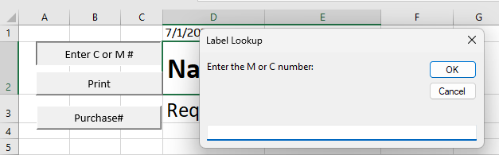
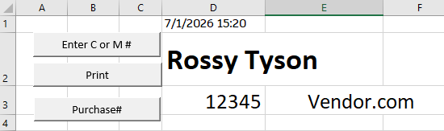
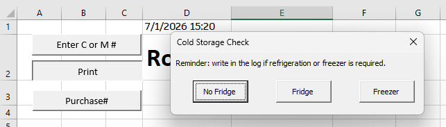
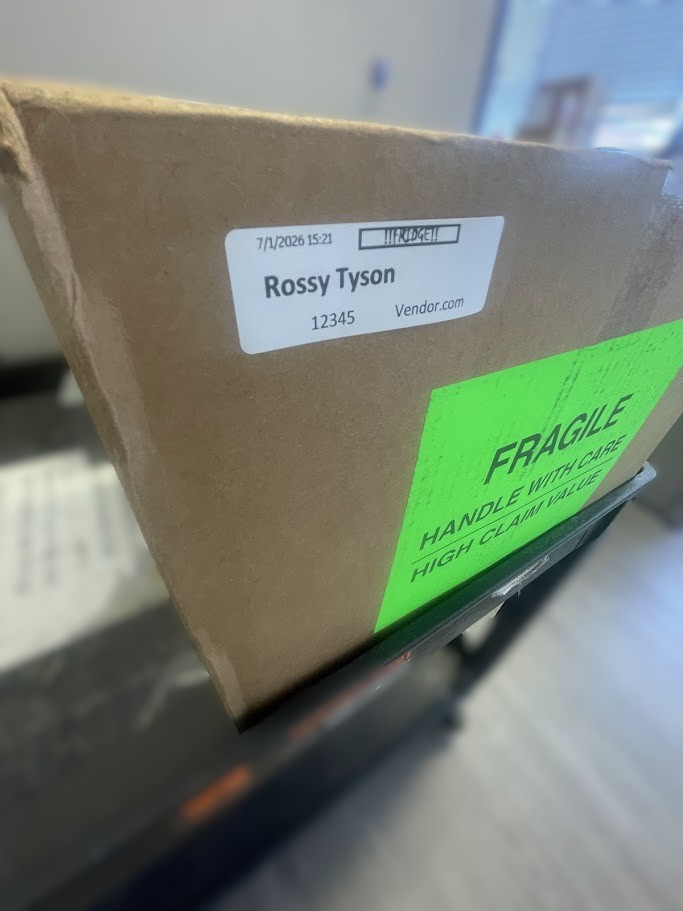

Overview
A small system improvement with practical operational impact.
Sometimes, improving a process does not require replacing the entire system. In many cases, a small improvement in the right part of the workflow can make the process faster, simpler, and more accurate.
For this project, a full package management system could have been built to track the process from the moment stakeholders purchase materials to the final pickup signature. However, that type of solution would require major changes in user habits, additional training, and a higher financial investment.
Instead, I focused on improving the part of the process where mistakes and delays were most likely to happen: preparing package labels. By creating a simple Excel-based automation tool, the process became faster, more consistent, and easier for student staff.
Problem
Manual label preparation created avoidable delays and errors.
Package labels were previously prepared manually, which created several challenges:
- Manual typing increased the chance of errors.
- Student workers had to search for information before preparing labels.
- Labels were not always consistent.
- Packages requiring refrigeration needed extra attention and could be missed.
- The process took longer than necessary during busy receiving periods.
Solution
Excel-based automation for package labels
The user enters a requisition number, and the system automatically populates the label with the correct information. If refrigeration is needed, the tool prompts the user and adds the note directly to the label.
Automated Lookup
The user enters a requisition number and the tool fills the label automatically.
Reduced Manual Entry
The system minimizes repeated typing and helps prevent common data entry mistakes.
Refrigeration Check
The tool prompts the user when cold storage is needed and adds the note to the label.
Print-Ready Format
The completed label is formatted and ready to print directly from Excel.
Screenshots
System screenshots
The screenshots below use demo data only. Real department names, requisition numbers, and internal information were removed for privacy.

Main Input Screen
The user enters the requisition number in the Excel tool.

Auto-Filled Label
The system automatically fills the package label with demo package information.

Refrigeration Prompt
The system asks if the package needs refrigeration.

Final Print-Ready Label
The final label is ready to print and includes the refrigeration note when needed.
Tools
Tools and skills used
Impact
Faster processing without a costly system replacement.
This project improved a specific part of the package receiving workflow without requiring a new software platform or a major process change.
- Reduced manual typing and repeated data entry.
- Improved label consistency.
- Helped student workers process packages more quickly.
- Reduced the chance of missing refrigeration requirements.
- Created a practical solution with no additional software cost.
Reflection
What this project shows
This project shows how Information Systems thinking can be applied to daily operations. The goal was not only to build a spreadsheet, but to understand a workflow, identify where errors were happening, and create a practical tool that made the process easier for the people using it.
It demonstrates how small, low-cost systems can support better operations when they are designed around real user needs.
Portfolio
Back to the main portfolio
View more projects focused on information systems, operations analytics, automation, and data analysis.
View All Projects